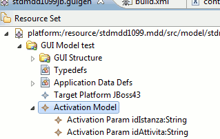
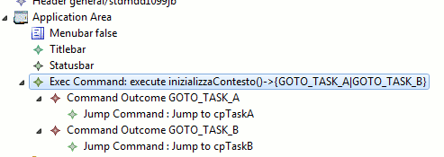
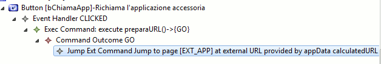

L'integrazione tra applicazioni a livello di user interface è una delle modalità di integrazione tra applicazioni. Un'altra modalità è rappresentata dall'integrazione tramite back end comune SOA, che però non è oggetto di questa guida. L'integrazione tra due applicazioni a livello di user interface si esplicita tramite una operatività che l'utente attua in parte sulla prima applicazione e in parte sulla seconda, talvolta condividendo a livello logico parte del contesto applicativo oppure il contesto di sicurezza.
I tipici scenari in cui entra in gioco questo tipo di integrazione sono:
Per ottenere questo tipo di integrazione (specialmente per quanto riguarda lo scenario #1)tipicamente è necessario predisporre opportunamente sia l'applicazione chiamante che quella chiamata. Di seguito sono descritti i passi da compiere utilizzando guigen.
Di seguito le attività da svolgere in guigen sull'applicazione chiamata per predisporsi ad essere invocata da un'altra applicazione.
In molti casi l'applicazione chiamata, per poter svolgere correttamente il suo compito, necessita di un contesto applicativo inizializzato all'ingresso nell'applicazione e dipendente dal contesto applicativo presente nell'applicazione chiamante al momento della chiamata. Un tipico esempio di questo è rappresentato dalla mini-app di un processo BPM che deve venire innescata in modo da operare sulla istanza del processo selezionata nell'applicazione chiamante (il workspace). Per fare ciò è necessario che l'applicazione chiamante passi all'applicazione chiamata uno o più parametri che permettano all'applicazione chiamata di inizializzare il contesto.
In guigen il modo in cui è possibile predisporre un'applicazione a ricevere parametri di attivazione è rappresentato dall'ActivatonModel (che si definisce come nodo figlio del nodo GUIModel). L'ActivationModel non è altro che un contenitore di elementi di tipo ActivationParam: ciascun ActivationParam corrisponde ad un parametro di attivazione. Il nome del parametro è libero, mentre il tipo del parametro può solamente essere un SimpleType. Nell'immagine seguente è mostrato un esempio di modello di attivazione.
L'inizializzazione del contesto deve avvenire al momento dell'ingresso nell'applicazione chiamata. Pertanto è necessario modellare la logica corrispondente nella catena di comandi che si definisce al di sotto dell'elemento ApplicationArea e che viene eseguito solo all ingresso nella action HomePage.do. I parametri modellati nell'ActivationModel saranno disponibili in tale logica.
In alcuni casi l'operatività sull'applicazione chiamata potrebbe dover iniziare da una schermata differente a seconda di alcune condizioni al contorno (dati sul DB, valore di un parametro di attivazione). Per realizzare questo scenario di home page dinamica sull'applicazione chiamante è sufficiente che la catena di comandi di inizializzazione contenga come ultimi comandi un ExecCommand con tanti Outcome quante sono i possibili punti di ingresso. Un esempio è riportato nella figura che segue.
A fronte della definizione (opzionale) di un ActivationModel l'URL con cui è necessario invocare un'applicazione
generata da guigen è nel formato: http://<host>/<context>/?<param_1>=<valore_1>&<param_2>=<valore_2>...
N.B: è importante non includere la action iniziale HomePage.do nell'url di innesco, pena il
malfunzionamento del meccanismo degli arricchimenti javascript (in particoalre alcuni eventi sulle combobox non funzioneranno).
Per richiamare un'applicazione da un'applicazione generata con guigen è possibile utilizzare un JumpExtCommand. A seconda che l'URL da richiamare contenga o meno dei parametri da calcolare a runtime è necessario impostare l'attributo runtimeUrlProvider facendolo puntare ad un ApplicationData di tipo stringa che conterrà a runtime l'url completo da richiamare (parametri compresi).
Le sessioni applicative delle due applicazioni (chiamante e chiamata) sono disgiunte e non hanno punti di contatto. Il meccanismo di session tracking di j2ee prevede l'utilizzo di un cookie di nome JSESSIONID che viene memorizzato nel browser e passato al server ad ogni interazione in modo che questo possa riconoscere a quale sessione fa riferimento. Nel caso in cui vi siano due applicazioni che si alternano nello stesso browser i JSESSIONID in gioco sono due:
Per fare in modo che non vi sia una sovrapposizione dei valori dei due cookie è necessario fare in modo che ciascuno dei due sia relativo al contesto dell'applicazione che lo ha generato, ovvero è necessario impostare il cookie-path. Per far ciò si agisce in modo differente a seconda che l'applicazione sia ospitata da u server weblogic oppure un server jboss.
Per impostare il cookie path in weblogic è necessario agire sul file weblogic.xml contenuto nella directory WEB-INF del WAR. In questa versione di generatore l'impostazione è automatica in fase di generazione. Poichè però essa è contenuta in una regione protetta, per gli applicativi generati con versioni precedenti è necessario in alternativa:
Le installazioni standard di JBoss possiedono automaticamente l'impostazione corretta del cookie path: in questo caso
non è necessario fare nulla. Gli ambienti standard CSI potrebbero però avere questa caratteristica inibita:
guigen permette di ripristianrla localmente all'applicativo. Per far ciò è necessario impostare a true
la property guigen.sessioncookievalve nel file dei parametri di build dei vari ambienti. questo permette di impostare
la variazione solo sugli ambienti ove questo sia effettivamente necessario. L'effetto di questa impostazione è
rappresentata dalla presenza nel file context.xml di una direttiva Valve specifica.
N.B: questa impostazione è molto specifica della server farm CSI e di norma non è necessaria su ambienti standard red-hat.
Se un'applicazione utilizza un meccanismo di autenticazione che prevede un meccanismo di single-sign-on, automaticamente stabilisce la possibilità di una integrazione implicita con le altre applicazioni che partecipano allo stesso dominio di SSO.
In questo scenario gli accorgimenti che tipicamente occorre tener presenti sono:
N.B: questa nota non rappresenta una trattazione completa degli scenari possibili, ma solo un richiamo all'attenzione delle implicazioni che la partecipazione ad un sistema di SSO comporta.